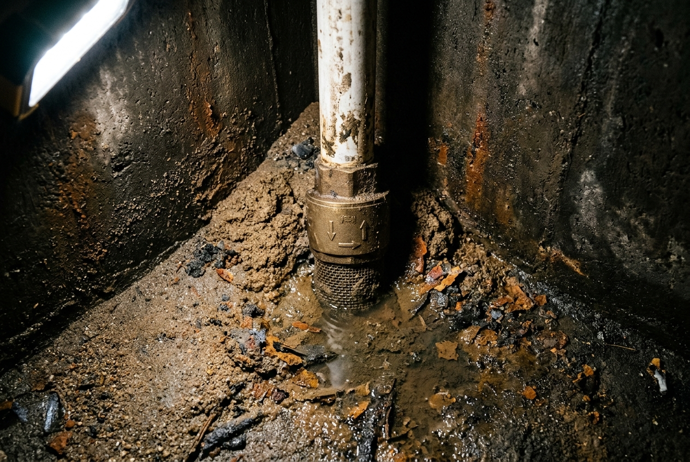

Floor Deposits
Sediment & Sludge Buildup
Fine sand, clay particulates, dissolved iron, and pipeline scale gradually settle at the bottom of sumps and overhead tanks, forming a dense layer of floor sludge.